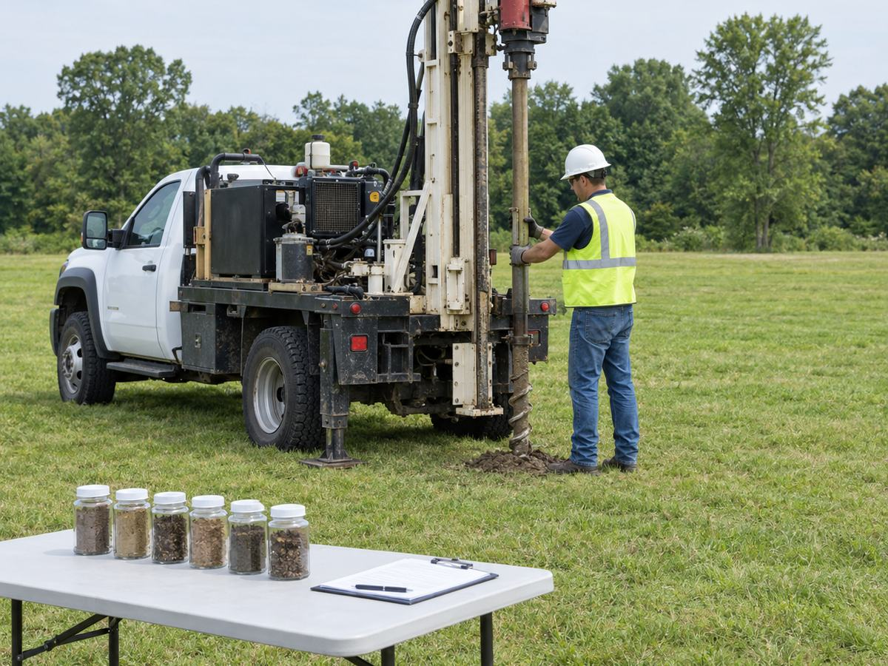
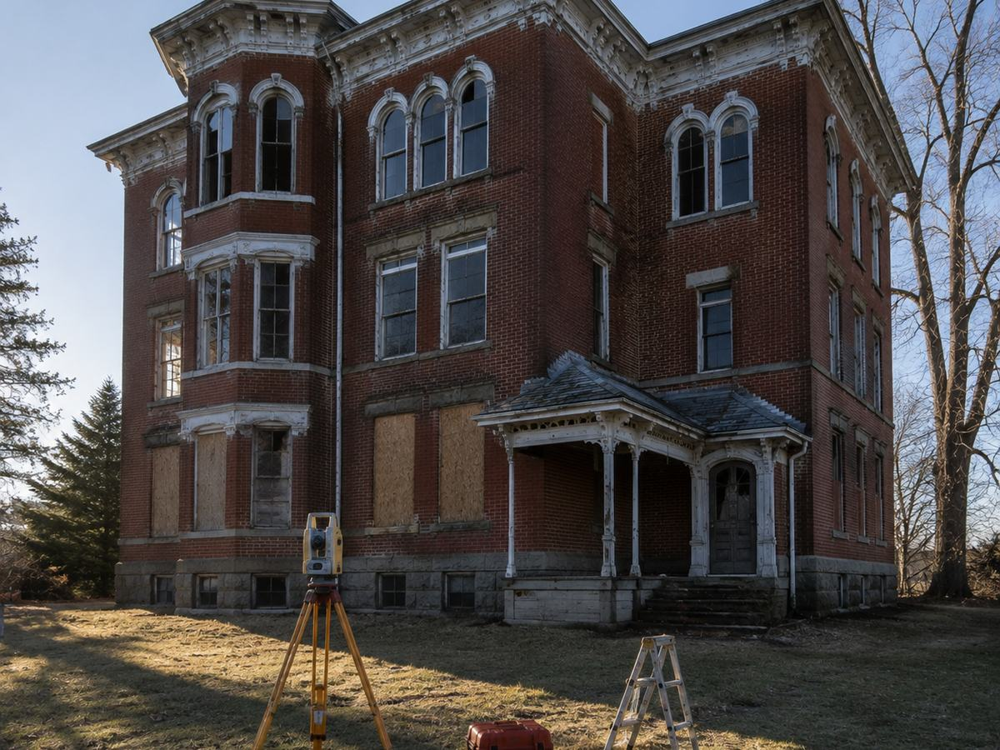

What due diligence actually covers
Before the VA commits to a parcel, a stack of separate questions has to be answered. Is there contamination in the soil or groundwater. Are there wetlands. Will the ground support what gets built on it. Is the title clean and the appraisal sound. Does the project trigger federal environmental review, and if it does, what does that review conclude.
None of those answers come from a desk. They come from field surveys, borings, sampling and records research, and they have to hold up to federal scrutiny. Our team is led by Donald Maggioli, PE as project manager with Michael Bundy as environmental and NEPA lead, working with Terracon on geotechnical and archaeological oversight.
Fort Stevens, Oregon
The VA wanted roughly five acres next to the existing cemetery, and the parcel sat inside Fort Stevens State Park. That location raises the bar on everything. We ran a biological survey, a Phase I environmental site assessment, a geotechnical survey with archaeological oversight, a wetlands survey, a utilities survey and hydrological and storm reporting, then carried a NEPA environmental assessment to a Finding of No Significant Impact.
Archaeological oversight during the borings is the detail worth noting. In a historic park you do not put a drill in the ground without someone qualified watching what comes up.
Rock Island, Illinois
Here the VA was acquiring about 9.7 acres from the Rock Island Arsenal. An active military installation means a different set of questions, and the site history turned up one: part of the parcel had been a gun range.
A former range means lead in the soil, so a Phase I assessment was not enough. We ran a Phase II environmental site assessment with sampling to find out what was actually there, alongside the geotechnical and wetlands surveys, and brought the NEPA assessment to a FONSI. That is the whole reason this work exists. Nobody would have known from the deed.
Togus, Maine
Togus was the opposite problem. Rather than acquiring land, the VA needed to take down dilapidated buildings, and those buildings sat inside the Togus VAMC National Cemetery Historic District as contributing resources to it.
Alares provided the A/E design for the demolition, with field investigations and lead and asbestos surveys, a NEPA assessment to a FONSI, and a National Historic Preservation Act Section 106 consultation to secure the State Historic Preservation Office's concurrence. Demolishing a contributing resource in a historic district is not a permit you simply apply for. It is a negotiation, and it has to be documented.
Milwaukee, Wisconsin
The most recent of the four is technical due diligence for building restorations on contributing resources to the Milwaukee VA Soldiers' Home Historic District, which includes Wood National Cemetery. The scope leans toward the real estate side: appraisals, ALTA surveys, title reports and a Phase I assessment, plus the NEPA assessment and another Section 106 consultation.
Why it matters
Four sites, four different problems, one common thread. The engineering and environmental work happens years before anyone sees a new section of headstones, and it is what makes that section possible. Get it wrong and the VA has bought land it cannot use, or worse, disturbed something it should not have. Get it right and the record is quiet, complete, and never questioned again.

